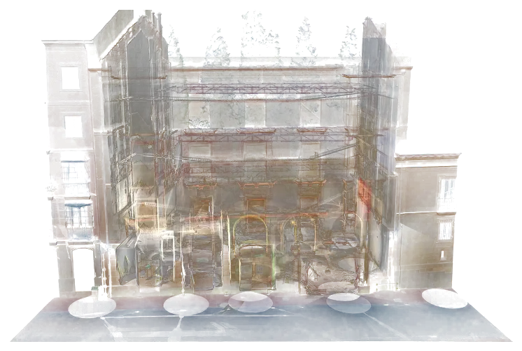
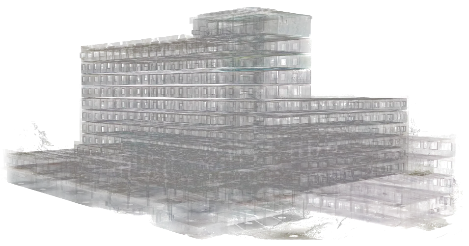
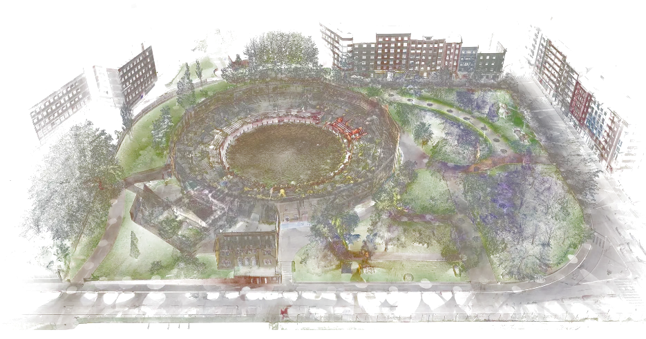

Patrimonio
Documentación sin contacto para restauración, deformaciones y patologías.
Documentamos lo existente con escáner láser, drones y fotogrametría, y lo entregamos en el formato que tu equipo ya usa: nube, modelo BIM o planos.
Pide presupuesto de escaneoDesde el detalle de una pieza hasta el escaneo extensivo del territorio.
Interiores, fachadas e instalaciones con la máxima densidad y precisión.
Cubiertas, parcelas, subestaciones y grandes extensiones en poco tiempo.
Visita remota del activo, enlazada a la nube y al modelo.
Estaciones totales y GNSS para control y georreferenciación.
| Entregable | Formatos | Para qué sirve |
|---|---|---|
| Nube de puntos registrada | E57 · RCP/RCS · LAS | Base para modelar, medir y comprobar |
| Modelo BIM as-built | RVT · IFC · [LOD] pactado | Proyecto de reforma, coordinación y operación |
| Planos 2D | DWG · PDF | Plantas, alzados y secciones del estado actual |
| Mallas y MDT | OBJ · FBX · GeoTIFF | Patrimonio, terreno y visualización |
| Tour virtual 360 | Visor web | Visitas remotas y consulta rápida |
[Confirmar formatos, tolerancias y niveles de detalle habituales]

Documentación sin contacto para restauración, deformaciones y patologías.

Base exacta para refuerzos, cambios de uso y control de desplazamientos.

Levantamientos topográficos, modelo del terreno y seguimiento de obra.

Subestaciones, parques solares, presas y puentes: diagnóstico y mantenimiento.
Con superficie, ubicación y entregable te damos precio y plazo cerrados.